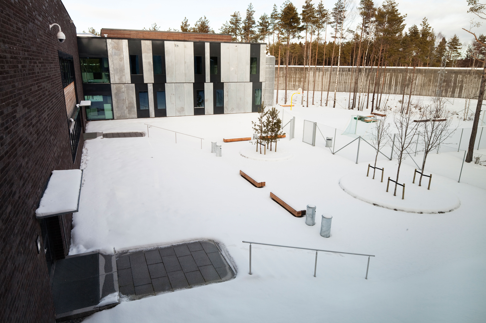

The good in us all: why we should trust people more.
Recently I read a book by the Dutch historian Rutger Bregman, called “Human Kind: A hopeful history”. The book is about human nature, the underlying features that shape us and how we are affected by civilisation or perhaps how civilisation is shaped by our nature. The book systematically goes through each aspect of human nature, each example of our collective nature that you may think is true and then shows you how it can be reversed.
Humankind: A hopeful history.⌗
I have often wondered if there wasn’t a better way of organising society than the current one, one where there are more incentives than money. It was immediately clear that a completely open market wouldn’t work, there is a good reason for the business regulations that already exist; without them people and businesses have a tendency not to take others in society into consideration, creating problems such as water pollution like in the case of DuPont (Rich, 2016) or mistreating workers as many companies still do.
In this book, Bregman lays out and systematically discredits, the proof for the cynical conception that most people have of humankind having an underlying bad and selfish nature, a trend that mostly began with one man; Thomas Hobbes. The English philosopher theorised that the only thing that held people back from ruthlessly killing and beating each other was the thin layer of civilisation that we had managed to create. These ideas were later developed into books such as ‘Lord of the flies’ by William Golding.
Bregman, however, shows a different side to humans; he looks back to the societies that existed before the advent of agriculture and finds that, usually, the groups of nomads that existed in that time frame had little or no fights whatsoever. These groups never had massive wars and hardly ever any sort of social structure, in fact, they often actively resisted it. If there was ever any type of leader, they were there because of expertise or a particular experience that they could offer the group. Despite sometimes choosing a leader, the decisions were always made together as a group and never individually. If the leader began to act on his own accord or in a way that was not liked within the group they were quickly deposed and removed from the group (Bregman, 2019. p128 - 129).
These observations of prehistoric tribes and nomadic groups come largely from observation of still unchanged tribes and archaeological evidence. There are some groups still in existence today who are so isolated from the world that they find even the slightest violence vulgar and could not comprehend that one person could ever intentionally kill another (Bregman, 2019. p128).
The effect of our own image.⌗
The historian also remarks on the effect that this view of ourselves has on society, remarking that it’s like a nocebo effect. The very idea that civilisation is the only thing that makes us good people, turns society into something that constantly is trying to stop people from hurting themselves and each other, often causing issues rather than solving them. Almost every governmental institution in the world today exists not because it trusts people or to make sure that people have some dignity but to “protect society” or to punish them for things that are deemed criminal. Instead of treating the underlying things that drive people towards criminality, for example, we punish them for it rather than reforming them away from it, almost always only exacerbating the problem further.

This philosophy has already been at work in places such as the Norwegian prison system, where inmates are often afforded everyday luxuries, allowed to continue or start a line of education or work jobs around the prison. They are also encouraged to cook for themselves and learn life skills that will help them on the outside. This often goes alongside counselling if it’s needed as well as friendship; often the guards talk and make friends with the inmates. This all obviously comes with a cost; Norway spends nearly £100,000 per prisoner, compared to roughly £40,000 in the UK (BBC, 2019). This does, however significantly reduce the country’s recidivism rate to only 20% meaning that the number of inmates per capita is much lower and they ultimately also spend less on the prison system both per capita and overall.
How things are different in trust-based systems.⌗
This kind of trust-based system is adaptable to almost anything in life; take businesses for example. In the Netherlands (Bregman’s home country), there is a home care organisation called “Buurtzorg”, set up by Jos de Blok. This is not a traditional company, it doesn’t have any central control, no managers and no real authority. They just have people, which are divided into groups, each of around 10 - 15 nursing staff who come together every day to discuss what the plan is and if anything needs to be addressed. The group then splits into 2 person teams and helps people at home, with an emphasis on providing support and access to local resources so that the person can try to be as self-sufficient and independent as possible. The teams don’t get input from the outside, decide salaries from inside the group and only get help if they need it. Other than that there is a single financial department that handles finances but no HR, Marketing or purchasing departments as each group does this themselves (Bregman, 2019. Ch 13, pt 4).
This organisation has grown to over 10,000 employees in 850 groups, other than that the effect that this model has had is difficult to quantify. So let’s instead take the example of FAVI, a french auto part manufacturer which in the 1980’s implemented a similar policy. The managerial staff were told to take a step back from the workers (in fact the first thing that happened was that the window from the upstairs office into the workshop was bricked over), and the workers were organised into teams, this time of 25 - 30. The punch clock that kept the workers’ hours was promptly thrown out and the bonus system was also abandoned. Each team got control over their own salaries, work hours, contractors, suppliers and pretty much anything else they needed. They were responsible for their own clients and once the managers retired, they weren’t replaced. The managerial role was only really needed if a team asked for it.
There will be a lot of people out there, especially proponents of a completely open market who would think that this would drive a company into the ground and sow panic and disarray among employees. Instead, the profits went up dramatically, the company quintupled (Multiplied by 5) their employees, they took over 50% of their market and the production time of their most important part went from 11 days to just 1 (Bregman, 2019. Ch 13, pt 4).
This is what modern democracy looks like.⌗
This is where the ideas that the writer discusses take a particularly interesting turn; he brings us to the idea of direct democracy. Often, the reason that even our democracies are quite flawed is because they don’t represent the prevailing sentiment among the people they purport to represent. The question is why do we only get to vote on the ideas we want to bring forward once every 4 or 5 years? And why does it require us to bring forward one singular person to lead us. This, in particular, is problematic, there is plenty of research that shows that people in elevated positions of power (even small ones) suffer a drop in IQ and certain tendencies similar to acquired sociopathy; such as impulsiveness, recklessness, egoism, arrogance and narcissism (Bregman, 2019. p 278).
If the question is “How do we remedy such issues?”, then the answer could be through direct democracy. In 2004, in a small Venezuelan city called Torres; a new major took office, he was little known and had no experience, it wasn’t thought that he would even have a chance between the corrupt former mayor and the ally of Hugo Chávez. His only campaign promise? To give all of the power and money that was given to him straight back to the people of Torres. So with 35.6% of the vote and only one policy Julio Chávez (No relation) won the office of mayor. The first thing to sort was the city budget, 100% of it was to be decided by the people of Torres and they immediately used their newfound power to dismantle the systems of corruption that had been built by the career politicians that came beforehand. More than 15 years later and the community has never given up the power again, the neighborhoods look better, there is a better local economy and more importantly; there is record participation in the newly formed democratic system. Every year to this day more than 15,000 people gather in 560 communities to discuss and decide their yearly budget (Bregman, 2019. Ch 15, pt 1).
The real question then is how can we best implement this system on a larger scale and in a good and fair way. Let’s take the current most accepted version of democracy within a state system that there is, that of 3 branches; Legislative, Executive and Judicial. Obviously, the legislative is currently the most democratic being a body made up of representatives that are decided in elections, it also is, therefore, the easiest to replace. A single website that allows for debate and voting on legislative proposals and amendments can be easily made, mix in some statistics and facts about each proposal and it looks like a working democratic system. Some other functions are harder to replace in the legislature; such as parliamentary committees and the review committees of parliamentary bills and amendments which will still have to hold elected officials.
The Judiciary branch is somewhat more difficult as it certainly can’t be replaced entirely. The court system is somewhat fair with the noticeable exception of the judge. One idea that may fare better is a judicial pool of legal experts like the jury who would have to discuss and vote on a motion in the court.
I have left the most difficult for last; the Executive branch, the coveted president, prime minister or supreme dictator of each country. There is certainly a point to be made that this branch is not even needed. Certainly, I believe that budgets for example should be made by the legislature rather than the executive, but are there some things that need to be decided by one person? The main thing that comes to mind is decisions about state secrets and the military; such problems would, by nature, need a small number of people to make decisions due to the nature of those domains. I suppose the larger question, then, is do we need a military or intelligence service at all? That is a really difficult question to answer, we’re certainly not in a position of war and we live in the most peaceful time in history. I suppose if we could adopt this kind of model across the globe, then having a military at all shouldn’t be necessary but until that happens it might be, which leaves the executive branch with a big question mark above it.
In Conclusion.⌗
So this is what the world might look like if we all trusted each other a little more. We could have a prison system that reforms rather than exacerbates, a justice system that is truly free and fair and a legislature that stops making universally unpopular decisions. I got almost all of the ideas from Bregman’s book, I highly recommend it. He goes into a lot more detail about the nature of humans and offers many more examples. I have been trying to change my outlook on life in the way that he recommends.
– Chico Demmenie.
Sources:
- BBC (2019) “How Norway turns criminals into good neighbors”
- Bregman R. (2019) “Human Kind: A new history” 13 ed. The Correspondent
- Rich N. (2016) “The lawyer who became DuPont’s worst nightmare” The New York Times
[Re-Uploaded & Edited 30/09/2022]